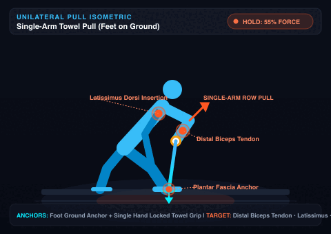
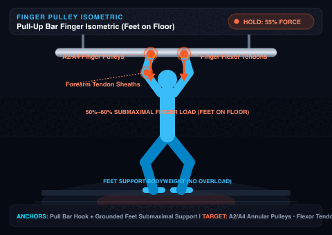
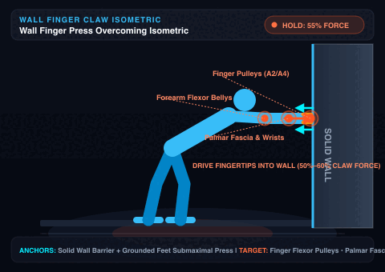
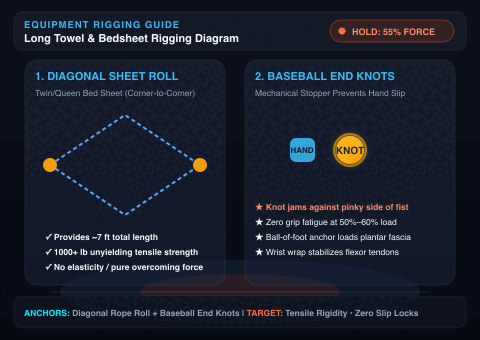
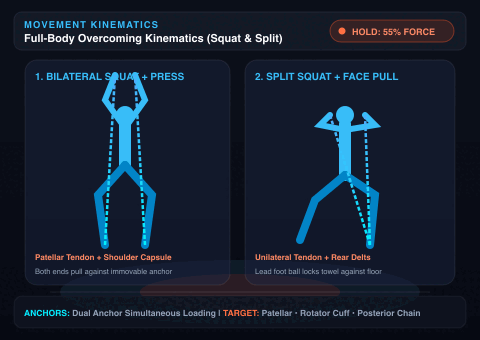
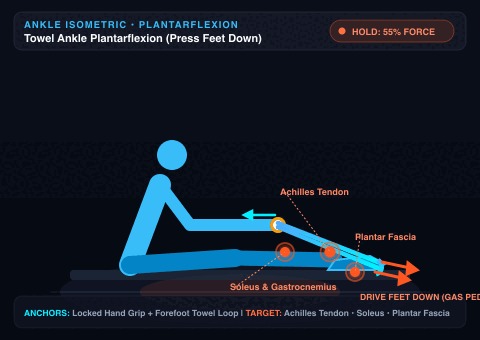
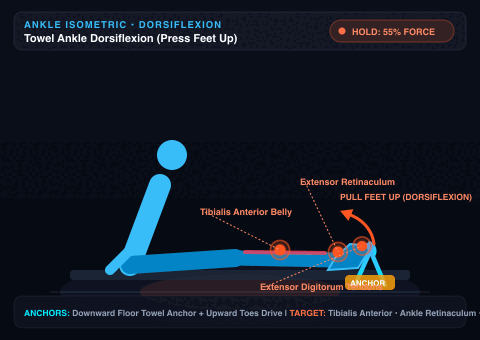
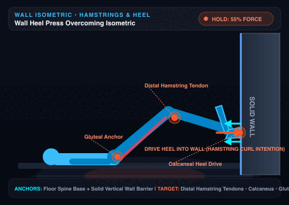

Deep Bilateral Squat + Upright Towel Overhead Press
Loop towel under balls of feet in deep squat. Drive hands overhead against towel while leg drive resists through floor.
REST & MUSCLE GROUP SELECTOR 2–3x / week (2x optimal)
Rest Duration:
High-Intensity Rest Rule: 5 reps of slow negatives produce extreme mechanical tension. If repeating the same muscle, rest 5–15m to recharge phosphocreatine. If switching to a different muscle group, 90s is all you need!
Optimal for Dr. Baar's 10s on / 50s off stress-relaxation protocol. Calm, steady tempo lowers muscle spindle guarding so mechanical load transfers directly to collagen fibrils.
Procedural Pacing Synthesizers (Coexists with Spotify / Apple Music):
Timer Beep Sound Profile:
Beep Balance:
85%
iOS & Mac Audio Coexistence: Timer cues and procedural synthesizers use low-latency Web Audio that plays directly alongside Spotify, Apple Music, or Podcasts without pausing your background music.
Dr. Keith Baar Tendon Training Protocol (Collagen Synthesis)
Target Effort: 50%–60% of Maximum Effort. 10s isometric hold followed by 50s rest × 10 sets (exactly 10 minutes total). Tendon collagen signaling saturates at 10 minutes; loading longer yields no extra benefit and can lead to fatigue. Perform 1–2x daily spaced ~6 hours apart. Ingest 15g gelatin/collagen + 50mg Vitamin C 30-60m prior.
In Plain English: Hold still against resistance at half-effort for 10 seconds, then rest for 50 seconds. This squeezes old water out of stiff tendons like a sponge and sucks in fresh collagen-healing nutrients without grinding your joints.
Complete Unloading & Fluid Exchange: Stand up, shake out your limbs, and let connective tissues completely relax. Tendons express bound water under load; the 50s total de-load allows fresh, nutrient-rich synovial fluid, proline, and glycine to perfuse back into the tendon matrix.
50%–60% Submaximal Effort
Dial In Target Force: Limit force strictly to 50%–60% of your maximum output—do not strain or grind joints at maximal loads. Research (Dr. Keith Baar) demonstrates this submaximal threshold maximizes lysyl oxidase crosslinking and collagen-I transcription while protecting joint integrity.
Stop at Exactly 10 Minutes
Collagen Saturation Limit: Mechanosensitive collagen signaling pathways saturate fully by Set 10. Training beyond 10 minutes provides zero additional collagen synthesis and induces connective tissue fatigue. Space this session roughly 6 hours apart from dynamic workouts.
Dual-Anchor Overcoming Tension
Pair Upper & Lower Chains Simultaneously: Looping an immovable anchor (towel under feet / wall) engages simultaneous reciprocal kinetic chains (squat + press/pull) with zero joint shear, reinforcing patellar, quad, Achilles, rotator cuff, and arm tendons.
Detailed Biomechanical Loops • Pressing Feet Down & Up for Ankles • Wall Heel Drive • Towel Rigging
5 Animated Masterclass Loops

Single-Arm Row Pull Tap to Zoom
1. Single-Arm Towel Pull (Feet on Ground)
Athletic Staggered Stance: Plant feet firmly on the floor. Loop towel or bedsheet under your lead foot. Grip towel end firmly with a single arm (using baseball end-knot or wrist wrap).
Unilateral Row Action: Brace core and resist torso rotation. Pull upward and back with your single arm into an unyielding 90° row/pull at 50%–60% submaximal effort for 10 seconds. Switch arms.
Connective Tissue Targets: Direct tensile loading of the distal biceps tendon, latissimus dorsi tendon, posterior deltoid, rotator cuff, and lead foot plantar fascia.

Bar Finger Pulleys Tap to Zoom
2. Pull Bar Finger Isometric (Feet on Floor)
Grounded Feet Setup: Stand directly under a pull-up bar with both feet firmly on the floor and knees in a bent athletic crouch. Hook fingers onto the bar in an open-hand or half-crimp hold.
Controlled Pulley Loading: Do not hang free! Keep feet supporting your weight. Bend knees slightly and pull downward through your fingers and arms against the immovable bar at 50%–60% effort for 10 seconds.
Connective Tissue Targets: Safely remodels the A2 & A4 finger annular pulleys, flexor digitorum tendons, and wrist flexor sheaths without whole-body joint strain.

Wall Finger Claw Press Tap to Zoom
3. Wall Finger Claw Press (Feet on Floor)
Wall Stance Setup: Stand facing a solid wall with feet planted on the floor, leaning slightly forward. Place fingertips firmly against the wall surface (or wall ledge/doorframe) in an active claw/crimp position.
Fingertip Press Action: Keep feet grounded. Actively press and drive your fingertips forward and downward into the unyielding wall at 50%–60% submaximal effort for 10 seconds.
Connective Tissue Targets:Finger flexor pulleys, palmar aponeurosis, thumb flexor tendons, and wrist stabilizers (zero equipment, home tendon armor).

Rigging & Knots Tap to Zoom
4. Diagonal Rope Rolling & Grip Locks
Diagonal Roll (Twin/Queen Bed Sheet): Lay flat diagonally and roll tightly corner-to-corner. Creates a ~7-foot unyielding high-tensile strap with 1000+ lb strength and zero elasticity.
Baseball End Knots: Tie an overhand knot at each tail. The knot acts as an immovable mechanical palm stopper so sweaty hands never slip under 50%–60% force.
Wrist Wrap & Ball-of-Foot Anchor: Wrap once around wrists for flexor tendon stability; loop under balls of both feet with flat spine.

Kinematics Loop Tap to Zoom
5. Movement Vectors (Squat & Split Pull)
Deep Bilateral Squat + Overhead Drive (Sets 1–4): Stand on loop in full squat. Drive upward against locked towel; patellar tendon and rotator cuff fire simultaneously with zero joint movement.
Split Squat + High Face Pull (Sets 5–6): Anchor center under lead front foot. Rear knee hovers 2 inches above floor. Pull towel ends up and out toward eye level.
Tension Principle: Keep strap 100% taut before initiating force. Smoothly ramp to 50%–60% effort over 2–3 seconds.

Press Feet Down Tap to Zoom
6. Towel Ankle Plantarflexion (Feet Down)
Setup & Grip: Sit on floor with legs extended forward (slight soft knee bend). Loop towel or rolled sheet around the balls of both feet (or one foot). Grip towel ends firmly, elbows braced against ribs.
Gas Pedal Action: Pull towel taut with arms, then actively drive and press the balls of your feet DOWNWARD against the unyielding towel at 50%–60% effort for 10 seconds.
Connective Tissue Targets: Direct heavy shear-free loading of the Achilles tendon, soleus, gastrocnemius belly, and plantar fascia.

Press Feet Up Tap to Zoom
7. Towel Ankle Dorsiflexion (Feet Up)
Setup & Downward Anchor: Sit with heels resting on the mat. Loop towel OVER the top of forefoot/toes. Anchor towel ends firmly down to the floor (step on the towel with your opposite foot or hold down against floor).
Upward Pull Action: Actively pull and drive your toes and forefoot UPWARD toward your shins against the unyielding downward restraint at 50%–60% effort for 10 seconds.
Connective Tissue Targets: Strengthens the tibialis anterior tendon, ankle extensor retinaculum, and extensor digitorum (prevents shin splints and bulletproofs the front ankle).

Wall Heel Press Tap to Zoom
8. Wall Heel Press (Hamstring & Posterior Chain)
Setup Position: Lie on back (supine) or sit with back supported on floor. Bend knees at ~90°, placing the heel(s) directly against a solid, unyielding wall or baseboard.
Horizontal Heel Drive: Drive your heel horizontally into the wall as if performing an immovable hamstring curl or heel dig at 50%–60% submaximal effort for 10 seconds.
Connective Tissue Targets: Intense activation of the distal hamstring tendons (biceps femoris & semitendinosus), calcaneus, posterior knee capsule, and gluteus maximus.
Chains:
Dr. Keith Baar's Muscle Blueprint (mTORC1 Study)
Minimalist High-Intensity Training (HIT) • 1 Single Set to Failure • Total Time: ~15–20 Minutes
3-Pillar Compound Flow (1 Set to True Failure)
Modality:
PILLAR 11s UP • 3s DOWN
1. Lower Body Push
Leg Press / Deep Squats: Drive through quad & hip extension to absolute failure.
PILLAR 21s UP • 3s DOWN
2. Upper Body Press
Chest Press / Dips: Explode up, control 3s negative stretch until momentary failure.
PILLAR 31s UP • 3s DOWN
3. Upper Body Pull
Lat Pulldown / Pull-ups: Aggressive 1s pull, 3s resisting lower to zero reps in reserve.
1 Working Set to True Failure Strict 2-to-1 Eccentric-to-Concentric Tempo Done 2 to 3 Times per Week Load Doesn't Matter, Intensity Does
1. The Size Principle & True Failure
Henneman's Size Principle: Muscle fibers fire in order from smallest to largest. Your body recruits low-threshold motor units first; you only activate the largest, strongest fibers (with the greatest growth potential) once fatigue forces them to fire. Taking one single set to momentary failure fully activates mTORC1 across all fibers without needing extra "junk volume" sets.
In Plain English: Your brain saves its biggest, strongest muscle fibers for emergencies. You only wake up those prime muscle-building fibers when an exercise gets so hard you physically cannot push another rep.
2. Slow Negatives & Sarcomerogenesis
Strict 2:1 Eccentric Tempo & Sarcomerogenesis: Emphasize a strict 1-count concentric (lifting) and 2-to-3-count eccentric (lowering) cadence into deep loaded stretches. High mechanical tension at end-range activates sarcomerogenesis—the biological addition of new sarcomeres in series at the ends of muscle fibers—literally growing longer, more compliant muscles while maximizing intracellular mTORC1 phosphorylation signaling.
In Plain English: Push the weight up in 1 second, but lower it smoothly for 3 seconds into a deep loaded stretch. This slow lowering phase triggers sarcomerogenesis—building brand-new muscle links onto the ends of your fibers so you grow longer, stronger muscles and permanent, usable athletic mobility.
3. Three Movement Pillars
100% Kinetic Coverage: Dr. Baar's minimalist workout covers the entire muscular system using 3 compound patterns: (1) Leg Press or Deep Squat; (2) Chest Press, Shoulder Press, or Dip; (3) Pull-up, Chin-up, or Lat Pulldown. No isolated fluff needed.
In Plain English: Just 3 movements work every muscle in your body: 1 leg push, 1 chest press, 1 back pull. One all-out set for each movement is all you need.
4. Load Doesn't Matter, Intensity Does
Weight vs. Bodyweight: Whether utilizing heavy weights for 6–8 reps, lighter weights for 15–20 reps, or bodyweight calisthenics, Dr. Baar's research proves muscle cross-sectional hypertrophy is nearly identical—as long as the set reaches the point where another full repetition is mechanically impossible (0 RIR).
In Plain English: Heavy weights or bodyweight dips/pull-ups build the exact same muscle size—the only thing that matters is pushing until you cannot complete another full rep.
5. Low Frequency (2–3x / Week)
Deep Recovery: Because training to true mechanical failure creates deep central nervous and muscular fatigue, this full-body routine should be performed only 2 to 3 times per week to allow full protein synthesis, glycogen replenishment, and systemic recovery.
In Plain English: Because you push to true 100% failure, you only need to lift 2 to 3 times a week. Your muscles grow while you rest, not while you train.
The 6-Hour Periodization Window (Tendon + Muscle Synergy)
Perform the 10-minute tendon isometrics (50%–60% submaximal hold) in the morning. Wait 6 hours for collagen remodeling and fluid exchange reset, then execute this 15–20 minute mTOR failure lifting session in the afternoon for optimal connective tissue protection and muscle hypertrophy.
5-Rep Heavy Slow Negatives: Strength & Hypertrophy Protocol
Maximal Eccentric Tension • Only 2 Sets Total • 2 to 3x Weekly (2x is Good Enough & Optimal) • Dynamic Rest Architecture
5 strict repetitions with 5-second controlled eccentric lowering. Heavy mechanical tension without concentric momentum.
→
DECISION PATHTARGET MUSCLE?
Rest Interval Selection
A. Same Muscle Group: Take 5 to 15 Minutes deep rest. Phosphocreatine (PCr) resynthesis & motor cortex recovery take time.
B. Different Muscle Group: Take 90 Seconds transition! Fresh muscle fibers have 100% capacity; no 5–15m delay needed.
→
SET 2FINAL SET
Maximal Effort & Growth
Second and final set of 5 reps slow negatives. Muscle fibers receive 100% hypertrophic stimulus. Zero junk volume accumulated!
1. Why Slow Negatives (5s)?
During eccentric contraction, muscles produce 20% to 50% more mechanical tension than during concentric lifting while using a fraction of the metabolic ATP. The structural protein titin acts as a molecular spring, unlocking high-tension mechanotransduction and sarcomerogenesis.
2. Why Only 2 Sets?
Because true slow negatives place extreme mechanical load on high-threshold Type IIx motor units, 2 sets trigger 100% of the muscle protein synthesis threshold. Performing 4–6 sets creates excessive microscopic tissue damage and central fatigue without adding any extra muscle growth.
3. Weekly Frequency: 2 to 3x (2x is Good Enough!)
You train 2 to 3 times per week, but usually 2 times a week is good enough and optimal. High-tension eccentric overload causes deep myofibrillar micro-disruption that requires 48 to 72 hours for full protein synthesis and motor unit recovery. 2 focused sessions ensure progressive overload and peak joint health without systemic burnout.
4. The 5–15m vs. 90s Rule
Same Muscle Group: Local ATP, phosphocreatine, and calcium pumps need 5–15m to recharge. Different Muscle Group: If switching (e.g. Chest ➔ Back, or Quads ➔ Shoulders), the incoming muscle is 100% fresh. You can proceed after a brief 90s transition without waiting!
Recommended Antagonist & Non-Overlapping Muscle Group Pairs (Zero 5–15m Delay)
Pair A: Chest Dips ⇄ Weighted Pull-ups
Set 1: 5 slow negatives Chest Dips (Chest/Triceps). Switch after 90s to Set 2: 5 slow negatives Pull-ups (Lats/Biceps).
Pair B: Bulgarian Split Squats ⇄ Romanian Deadlifts
Set 1: 5 slow negatives Split Squats (Quads). Switch after 90s to Set 2: 5 slow negatives RDLs (Hamstrings/Glutes).
Pair C: Overhead Dumbbell Press ⇄ Inverted Rows
Set 1: 5 slow negatives Overhead Press (Shoulders). Switch after 90s to Set 2: 5 slow negatives Rows (Upper Back).
Dr. Keith Baar: Connective Tissue Mobility & Collagen Creep Blueprint
Working on neurological mobility is often significantly better—especially if your goal is long-term, usable, and injury-resistant movement rather than temporary looseness. While both approaches might show the exact same range of motion (ROM) in the mirror, what happens under the hood is completely different.
Passive "Creep" Stretch (30s+ Hold):
[Brain Senses Weakness]→[Tissues Physically Deform]→[Temporary Range Unlocked]→[Guard Goes Back Up Later]
Neurological / Active Mobility (Contraction at End-Range):
[Brain Senses Strength]→[Inhibits Threat Alarm]→[Permanent Active Control]→[Joint Stability Preserved]
Passive Tissue Deformation
30s+ STATIC HOLDS
Creep (Passive Tissue Deformation)
The Warm Taffy / Plastic Bag Analogy
Mechanical Deformation: Think of pulling slowly on a plastic bag or a piece of warm taffy. Holding a passive stretch for 30+ seconds forces water out of the tissue and mechanically deforms collagen fibers.
Zero Neural Control: You gain range, but it is purely passive; your nervous system didn't learn how to control, stabilize, or produce force inside that new space.
Viscoelastic Snapback: Hours later as fluid returns, the nervous system detects weakness and resets baseline tension, making the tightness return the next morning.
Active Signaling & Usable Strength
PAILs / RAILs ISOMETRICS
Neurological Mobility (Active Neural Drive)
The Strict Security Guard Analogy
The Brain Security Guard: Your nervous system locks down a joint not because muscles are physically "too short", but because the brain feels unsafe and detects lack of strength at the end-range.
Active End-Range Loading: Techniques like isometric contractions (contracting muscles while in a deep stretch), PAILs/RAILs, or active end-range lifting teach the security guard that you own that space and can handle force there.
Inhibits Threat Alarm: Once the brain knows you can exert force at end-range, it permanently lowers resting tension, making gains stick far longer.
3 Reasons Why Neurological Mobility Is Often The Superior Choice:
1. Usable Athletic Strength
ROM Becomes Usable Strength
If you achieve a deep split or shoulder stretch purely through passive creep, you cannot pull yourself out without using hands or momentum. If unexpected force hits you (slipping on ice or catching a heavy weight awkwardly), your body lacks the active neural drive to protect the joint. Neurological mobility pairs flexibility with usable strength.
2. Durability & Retention
Durability & "Stickiness" of Gains
Passive creep stretches exhibit high viscoelastic relaxation—meaning tissue stretches temporarily, but snaps back or stiffens up hours later as fluids return. Neurological methods rewrite the "threat threshold" of the stretch reflex (muscle spindles & Golgi tendon organs), permanently lowering resting tension.
3. Power & Stiffness
Preserves Tendon Spring & RFD
Holding prolonged passive stretches temporarily dampens muscle power and dulls the "springiness" (elastic recoil) of tendons for explosive athletics. Neurological end-range training, especially using controlled isometrics, maintains or even enhances tissue integrity and tendon load capacity while opening up the joint.
Choose Neurological Mobility When:
You want strength, control, and injury protection at the end of your range.
You are warming up before lifting, calisthenics, sprinting, or explosive work.
You find your joint tightness keeps returning the next morning.
Choose Passive Creep (30–60s) When:
You are doing low-stress cool-downs or down-regulating before bed.
You are deliberately targeting non-contractile tissue adaptation (long-hold fascia/ligament elongation).
Unfreezing stubborn joint capsules in separate off-day recovery sessions.
Sink to your true active end-range without lumbar or hip rotation cheating. Take a diaphragmatic breath.
Step 23–5s Prep
Whole-Body Irradiation
Brace your abs, grip fists, and turn your entire body into solid iron to send maximum neural signaling to the target joint.
Step 310s Contraction
PAILs Progressive Ramp
Drive the stretched muscle against the floor/barrier. Ramp effort: 20% → 50% → 80% → 100% max isometric force.
Step 410s Maximal
RAILs Regressive Pull
Instantly reverse! Contract opposing muscles at 100% effort to pull your limb deeper into the new range. Own that space!
Step 520s Reset
Range Integration
Relax down-regulation breath into newly expanded space. Threat alarm inhibited; switch sides or repeat.
Recommended: 6–8 sets across target joints before dynamic sessions.
Dynamic Joint Prep vs. Collagen Creep Holds: When & How to Mobilize
Protect The Spring • No Power Loss
Mobility drills can be used as an effective primer, but only if you distinguish between dynamic joint prep and collagen creep holds. Applying long, sustained holds prior to explosive training de-stiffens tendons and robs your elastic power.
Pre-Workout Primer
< 5s PER POSITION
Before Dynamic Training: Dynamic Primer Only
Active Movement • Preserves Tendon Stiffness
Keep It Moving: Use arm swings, leg swings, hip CARs (controlled articular rotations), and brief, active dynamic stretches (strictly under 5 seconds per position).
Protect the "Spring": Long, static holds before explosive dynamic work squeeze bound water out of the collagen matrix and induce stress relaxation. This slackens your tendons, directly reducing rate-of-force development (RFD), elastic power return, and dynamic joint stability.
Neural Wake-Up: The goal prior to dynamic work is simply elevating core temperature, increasing synovial fluid flow, and waking up the nervous system without de-stiffening the tendon springs.
Outcome: Stiff biological springs, high RFD, and primed motor units.
Post-Workout / PM
20–30s+ CREEP HOLDS
After Dynamic Training (or PM): Sustained Creep Holds
Collagen Remodeling • Melts Stiffness & Expands ROM
True Remodeling: Sustained holds like the AuraInterval Mobility Creep Protocol—using the 3-phase flow of a 10–15s primer, 3–5s reset, and 20–30s creep hold—belong after dynamic training or in a separate session spaced 6 hours away.
Warm Tissue Compliance: After a workout, the muscles and surrounding connective tissues are already warm and compliant, making it the safest window to apply submaximal isometric tension at end-range without triggering protective muscle guarding.
No Power Penalty: Because explosive work is finished, relaxing the collagen fibers and breaking down restrictive cross-links won't impair athletic performance.
Outcome: True collagen remodeling, fluid extrusion, zero power penalty.
The Golden Protocol Rule: Use dynamic, unweighted movement to prime your joints before explosive training, and save sustained 20–30-second mobility creep holds for post-workout or evening active recovery.
The 3-Phase "Break-In" & Collagen Creep Flow (Biologically Sound Positioning)
Phase 1 • Primer10–15 SECONDS
1. The "Tissue Primer" (Break-In)
First effort simply "breaks in" the position. Lets anterior chain, hip flexors, or shoulders adjust to the load without panic. Shifts bound water out of compressed connective areas and overrides the initial protective muscle-spindle reflex.
Overrides Spindle Reflex • Shifts Bound Water
Phase 2 • Reset3–5 SECONDS
2. The Mini-Reset
Dropping down or releasing tension for 3–5 seconds clears peak neurological guarding and lets you reset diaphragmatic breathing. The autonomic nervous system down-regulates before re-entry.
Clears Peak Guarding • Resets Breath
Phase 3 • Creep20–30 SECONDS
3. The Working Creep Hold
Re-entering the position immediately locks into a much smoother, less intense 20 to 30 seconds of genuine collagen creep, because tissue has already yielded its stiffest initial resistance.
50%–60% Submaximal Window • Pure Compliance
Loaded Stretching (Slow Negatives) vs. 30-Second Creep Holds
Tied For #1 • Two Distinct Biological Adaptations
They are actually tied for first place, but they solve two completely different problems. Depending on the joint, slow negative reps (loaded stretching) are often considered the superior method for creating usable athletic mobility.
30-Second Static Hold (Creep)→ Melts tight connective tissue & dehydrated fascia (Passive flexibility)
Slow Negative Rep (Eccentric)→ Builds new muscle tissue at length via sarcomerogenesis (Active mobility)
Active End-Range Loading: When you slowly lower yourself into a deep, weighted stretch—like controlling the descent of a Cossack squat with a 30 lb vest or sinking into a deep gymnastic ring dip—you actively bear heavy weight at extreme lengths, something a passive hold cannot replicate.
Sarcomerogenesis (Growing Longer Muscle): When your nervous system senses high mechanical tension at the very bottom of a stretch, it triggers sarcomerogenesis. Instead of just stretching existing fibers like a rubber band, your body builds brand-new muscle segments (sarcomeres) onto the ends of the fiber—literally growing a longer muscle.
Neural Safety & Stretch Reflex Shutoff: Because you build immense strength at that end-range, your brain feels safe there. It stops firing the protective "stretch reflex," meaning you permanently own that deep mobility in dynamic athletics.
Best For: Building functional strength at end ranges, bulletproofing muscle-tendon junctions, and acquiring active athletic mobility.
Passive Flexibility & Joint Capsules
Why 30-Second Holds Are Still Required
Viscoelastic Creep • Capsular Release • Dehydrated Fascia
Unfreezing Glued Joint Capsules: Slow negatives are incredible for lengthening muscles and strengthening tendons, but they cannot fix a "frozen" joint capsule or stubborn, dehydrated fascia.
Bypassing Deep Stiffness: If the deep connective tissue around your hip socket or thoracic spine is physically glued down from decades of living, a heavy negative rep will just bounce off that stiffness without freeing the joint.
Squeezing Bound Water Out: You still need the quiet, unweighted 30-second passive hold to squeeze bound water out (creep) so those deep, non-contractile collagen tissues can finally unbind and slide freely.
Best For: Melting stubborn capsule restrictions, hydrating bound fascial sheets, and releasing baseline joint stiffness with zero fatigue.
The Ultimate Combination: How to Use Both Tools at 45
Circadian Synergistic Protocol
1
During Your Main Workout (PM / Afternoon): Focus on slow, deep negatives (3s lowering) on your compound movements to trigger sarcomerogenesis and build longer, stronger muscle fibers while your nervous system is hot and highly active.
2
In the Evening or on Off-Days: Use the 30-second passive creep holds to melt deep joint capsules, relax dehydrated fascia, and open up stubborn corners of your body without accumulating muscular or central fatigue.
The 6-Hour Refractory Period & 2x Daily Cadence
Tendon and ligament cells (tenocytes) become mechanosensitive during loading, but the cellular signaling pathways that drive collagen synthesis and remodeling shut off and saturate within 5 to 10 minutes. The cells enter a physiological refractory state and need approximately 6 hours of recovery before they can sense and respond to mechanical tension again.
6-Hour Cellular Reset Up to 2x Daily (AM & PM) 5–10 Min Window Cap Zero Unproductive Wear
1. Lengthened / End-Range Isometrics
Target the Muscle-Tendon Junction (MTJ)
Dr. Baar's latest findings demonstrate that isometric loading performed at long muscle-tendon lengths (end-range) creates superior mechanical strain across the muscle-tendon junction (MTJ). Mid-length holds fail to transmit sufficient strain through tendon insertions. For enduring mobility, always anchor isometrics at long joint angles.
2. Active 50%–60% vs. Passive Stretch
Fluid Extrusion & Collagen Creep
Traditional passive static stretching merely pulls on compliant muscle bellies and muscle spindles, leaving stiff tendons unloaded. In contrast, active 50%–60% submaximal isometrics squeeze bound water out of the collagen matrix, allowing tightly packed fibers to slide past each other (creep) without triggering protective neuromuscular spasm.
3. 5–10m Cap & 6-Hour Reset
Tenocyte Signaling Saturation
Tenocyte mechanosensitive pathways turn off and plateau within 5 to 10 minutes of mechanical loading. Continuing to stretch or load past 10 minutes produces zero additional collagen synthesis, only tissue inflammation. The cells require a 6-hour refractory window to reabsorb fluid and reset before they can respond again.
4. Tendon Stiffness & Spring Dynamics
Preserve Elastic Power & Rate-of-Force Development (RFD)
Tendons are biological springs engineered to store and release recoil energy for locomotion and explosive power. Sustained holds before dynamic work induce stress relaxation, slackening tendons and directly blunting rate-of-force development (RFD) and joint stability. Use brief dynamic primers (<5s) before jumping or lifting to elevate temperature and synovial flow, and reserve 20–30s creep holds for post-workout or evening active recovery.
UC Davis Lab Discoveries: Bioengineered Ligaments & Cellular Signaling
Functional Molecular Biology Lab • Dr. Keith Baar
1. Petri-Dish Sinew
Bioengineered Ligament Models
Baar’s lab took human ACL and tendon cells (fibroblasts), embedded them in fibrin gel matrices anchored to pins, and grew miniature, functional ligaments. This allowed his team to isolate connective tissue from the nervous system and directly test how raw mechanical load alters cellular signaling without whole-body systemic confounders.
In Plain English: In the lab, Dr. Baar grew real human tendon cords in small dishes without any nerves attached. This proved that pulling on tendons triggers healing directly inside the tissue itself, not just in your brain.
2. Fiber Sliding
Measuring "Creep" & Fluid Extrusion
The lab mounted engineered tissues onto specialized stretching machines applying precise mechanical loads with real-time tensile force feedback. When connective tissue is held under constant tension, bound water is gradually squeezed out, allowing tightly packed collagen fibers to physically slide past one another—a process known as stress relaxation or creep.
In Plain English: Think of your tendon like a wet kitchen sponge. When you pull and hold steady tension, trapped water slowly squeezes out, allowing stiff collagen strands to slide past each other and loosen up without tearing.
3. Hold Duration
Short vs. Long Holds (Stiffness vs. Compliance)
Short, dynamic bouts (under 10s) only stressed the outer, stiffest fibers, triggering enzymes like lysyl oxidase to form permanent cross-links and make the tendon stiffer. In contrast, sustained holds (30s+) transferred load throughout the entire matrix, breaking excess cross-links and producing compliant, lengthened tissue.
In Plain English: Quick bounces make tendons springy like rubber bands for jumping. Long, steady holds (30s+) melt stiffness away and permanently open up joint flexibility.
4. Hard Ceiling
The 10-Minute Signaling Saturation
By analyzing biochemical markers (procollagen synthesis and phosphorylation of key signaling proteins), Baar observed that cellular signaling ramped up almost immediately upon mechanical loading but hit a hard plateau around 5 to 10 minutes. Continuing to load past 10 minutes provided zero additional cellular signal to synthesize collagen or remodel.
In Plain English: Tendon cells can only listen to a workout for 5 to 10 minutes. Stretching longer doesn't build more flexibility—it just wears out your joints.
5. Refractory Window
The 6-Hour Refractory Reset
Following the 10-minute stimulus, tenocytes entered a physiological "numb" refractory state. Even when restretched an hour or two later, they did not register the stimulus. Only after waiting roughly 6 hours did the cells reset their mechanosensitivity and become responsive to another round of loading.
In Plain English: After 10 minutes of loading, tendon cells take a 6-hour nap. Doing two short 10-minute sessions separated by 6 hours gives you double the gains compared to one long grueling workout.
Pacey Performance Podcast: Tendons & Ligaments with Keith Baar
Dr. Keith Baar breaks down his laboratory findings behind connective tissue mechanics, load duration, collagen creep, fiber sliding, and why 5–10 minutes of loading triggers the maximum daily remodeling cascade.
"Connective tissue cells (tenocytes) only respond to mechanical load for 5 to 10 minutes. After that, they turn off their signaling cascade and enter a refractory state. They cannot be stimulated again for roughly 6 hours.
Stretching a joint for 45 minutes does not create more collagen—it just creates inflammation and tissue damage. Two 5-to-10-minute sessions separated by 6 hours will reshape your mobility faster than hours of prolonged stretching."
— Dr. Keith Baar, Functional Molecular Biology Laboratory, UC Davis
The Complete Full-Body Mobility Atlas (Proven by Modern Tests & Creep Science)
13 Gold-Standard Mobility Drills Across 6 Primary Kinetic Chains • Verified by EMG, Ultrasound, & UC Davis Collagen Creep Dynamics
Scandinavian longitudinal data analyzed by Prof. Baar demonstrates that cyclists who ride at fast speeds live 3.9 to 5.3 years longer than slow cyclists. Critically, slow cyclists who accumulated high weekly hours did not match this survival advantage. Relative speed and intensity dictate life expectancy, not sheer duration or volume.
2. The PGC-1α Master Switch
Mitochondrial Biogenesis & Capillary Density
Dr. Keith Baar's laboratory identified PGC-1α (Peroxisome proliferator-activated receptor-γ coactivator 1α) as the master transcription coactivator controlling mitochondrial density and capillary growth. Fast, high-power exercise triggers massive intracellular calcium transients (activating CaMK) and energy depletion (activating AMPK), turning on PGC-1α to maximum levels.
3. Fast-Twitch Motor Units
Henneman's Size Principle & Sarcopenia
Nerve fibers fire in order: small Type I slow fibers first, high-threshold Type IIa and IIx fast-twitch fibers last. Slow, comfortable cardio never activates fast-twitch motor units. As humans age, we selectively lose these fast motor units, causing rapid muscle wasting and metabolic frailty. High-velocity or maximum-force exercise is the only way to recruit and preserve them.
4. "Going to See God" Protocol
1–2 Maximal Sessions Weekly (Cannot Speak)
Prof. Baar describes an optimal stimulus as a session so intense you "go to see God"—where effort is so high that speaking a sentence is physically impossible. You only need this once or twice per week. Short intervals of 20 to 30 seconds all-out (such as Tabata or sprint intervals) or up to 2 minutes with complete rest trigger 100% of cellular adaptation without systemic breakdown.
5. Strength as Mortality Buffer
Top Tertile of Strength = Dramatic Survival
Being in the highest third of muscle strength provides one of the strongest buffers against all-cause mortality, cardiovascular events, and neurodegeneration. Muscle is your primary glucose and amino acid reservoir; preserving high contractile force ensures independence and metabolic resilience into advanced age.
6. Joint & Tendon Protection
Stiff Tendons Enable High-Velocity Power
Fast exercise places high rate-of-force development through connective tissues. Dr. Baar emphasizes that without isometric tendon training (morning 10s hold / 50s rest), high-speed sprinting can cause patellar or Achilles injury. Stiff, collagen-dense tendons transmit power efficiently and protect cartilage from shear.
"If you only do long, slow distance, you are only ever training the smallest, weakest motor units in your body.
To recruit the big motor units that you lose with aging, you have to go fast or push heavy.
Going hard enough that you 'go to see God' once or twice a week turns on PGC-1α, expands your capillary beds, and gives you years of healthy life that slow exercise simply cannot replicate."
— Prof. Keith Baar, Functional Molecular Biology Laboratory, UC Davis
Dr. Keith Baar's HIIT Protocol: 30-Second Wingate Sprints (SIT)
Zero Tendon Impact • CaMK & AMPK Saturation
Step 1 • Modality
Low-Impact Equipment (Stationary Bike / Airdyne)
Baar emphasizes performing maximal sprints on a stationary bike, Wattbike, or fan bike rather than track sprinting. Running generates 6–8× bodyweight impact shocks on tendons and cartilage. Cycling eliminates eccentric impact while allowing 100% cardiovascular and motor unit output with zero joint trauma.
Protects patellar & Achilles tendons from high rate-of-force shock
Step 2 • Cadence
High Cadence (85–95+ RPM) Over Grinding
Spin fast at 85 to 95+ RPM with moderate resistance rather than mashing a brutal gear. High rotational velocity fires high-threshold Type IIx fast motor units via speed while sparing knee joint compression and articular cartilage wear.
Velocity activates fast motor units without grinding patellofemoral cartilage
Step 3 • Structure
3–4 Sets × 30s All-Out • 2.5m Active Recovery
Perform exactly 3 to 4 repetitions of 30-second all-out sprints. Recover between bouts with 2.5 to 3 minutes (150–180s) of very easy, low-resistance spinning. Total sprint time across the entire session is only 1.5 to 2 minutes!
4 × 30s sprints = maximum stimulus in minimal time (12 min session total)
Step 4 • Intensity
"Going to See God" • 1–2 Times Weekly Max
Effort must be pure 100% capacity where speaking even a single word is physically impossible. This turns on CaMK and AMPK, spiking master longevity regulator PGC-1α. Perform this only 1–2 times per week; more creates chronic autonomic fatigue.
1–2x weekly triggers maximal mitochondrial density and capillary expansion
Analyzing large-scale cohort studies (including Copenhagen and UK Biobank), Prof. Keith Baar highlights that muscle strength is far more predictive of all-cause mortality than muscle mass alone. Adults who fall into the lowest strength tertile between ages 40 and 60 experience more than double the mortality rate. Being in the top tertile slashes mortality by over 50%. Neuromuscular recruitment and tendon stiffness prevent catastrophic physical frailty.
In Plain English: Between ages 40 and 60, raw physical strength is the single best predictor of how long you will live. Staying in the strong group cuts your death risk by more than half.
2. Survival Reservoir
Amino Acid & Glucose Emergency Bank
Beyond locomotion, skeletal muscle is your body's primary survival reservoir. During acute trauma, sepsis, cancer cachexia, chemotherapy, or severe infection, the immune system and liver ramp up protein synthesis by drawing amino acids directly from muscle. Low muscle reserves force your body to cannibalize vital organs, drastically increasing hospital mortality. Muscle also clears ~80% of postprandial glucose.
In Plain English: Muscle is your body's emergency bank. If you face a severe illness, infection, or surgery, your body breaks down muscle to heal organs and fight off disease. More muscle = vastly higher odds of surviving life-threatening health events.
3. Exercise "Snacks" (1–2 Min MED)
Minimum Effective Dose for Sedentary Breaks
You don't need exhausting 60-minute workouts to protect cellular health. Prof. Baar recommends 1 to 2 minute "exercise snacks" (vigorous stair climbs, deep wall-sit isometrics, or bodyweight squats) interspersed throughout the sedentary workday. This micro-dose restores GLUT4 glucose transporter translocation, maintains tendon collagen mechanosensitivity, and triggers cellular renewal without accumulating central nervous system fatigue.
In Plain English: 1 to 2 minutes of brisk stair climbing or wall-sits during your workday acts like a sponge for blood sugar, clearing glucose immediately and keeping your tendons springy without needing gym clothes.
4. Mechanical Fluid Convection
Gelatin + Vit C 30–60m Pre-Loading
Mature tendons and ligaments are avascular—blood vessels cannot penetrate their dense fibrous core. Nutrients (glycine, proline, hydroxyproline) only enter via mechanical fluid convection: mechanical tension squeezes fluid out, and relaxation pulls interstitial fluid back in like a sponge. Ingesting 15–20g gelatin or collagen + 50mg Vitamin C 30–60 minutes prior ensures peak blood amino acid levels coincide with this mechanical fluid pump.
In Plain English: Tendons have almost no direct blood vessels. Drinking gelatin + Vitamin C 30–60 minutes before your workout lets physical exercise squeeze old fluid out and suck fresh collagen building blocks directly into the tendon like a kitchen sponge.
The Keith Baar "Talk Test" Intensity Calibration Matrix
Gold-standard field calibration without blood lactate testing
Tier 1
Zone 1 • Recovery
Can sing comfortably without catching breath. Very light effort (<50% HRmax).
Active clearance, zero AMPK spike
Tier 2
Zone 2 • Aerobic Base
Can converse in complete sentences continuously. Elevated nasal/oral breathing.
Mitochondrial density & fat oxidation
Tier 3
Threshold • Tempo
Can speak short sentences (4–6 words) before pausing to inhale.
Lactate steady-state boundary
Tier 4
HIIT • VO2 Max
Can only utter 1–2 broken words between gasps. Heavy hyperventilation.
High AMPK & cardiac stroke volume
Tier 5
Wingate / SIT (Baar)
Speech is completely impossible. 100% all-out sprint effort ("Going to See God").
Peak PGC-1α & Type IIx recruitment
"Muscle is your metabolic currency and your physiological armor. When an emergency strikes—a severe infection, cancer treatment, or an accident—your liver and immune system require massive amino acid turnover, and that survival protein comes entirely from your muscle reserve. If you enter your 50s and 60s without strength, you have zero biological margin of safety."
— Prof. Keith Baar, PhD, UC Davis Molecular Biology Lab (Stress-Free Longevity Interview)
Dr. Keith Baar Training Splits: Daily & Weekly Molecular Periodization
The AMPK vs. mTORC1 Molecular Antagonism • 6-Hour Refractory Window • Synergy Matrix
The AMPK vs. mTORC1 Molecular Switch (Why Interference Occurs)
Dr. Keith Baar’s breakthrough laboratory research identified the precise molecular mechanism behind the interference effect: AMPK (AMP-activated protein kinase), turned on by endurance cardio and high-intensity sprints, directly phosphorylates TSC2 and raptor, completely shutting down mTORC1 (mechanistic target of rapamycin complex 1), which is the essential master switch for muscle protein synthesis and hypertrophy.
Rule of thumb: Running or cycling immediately before or after heavy strength training blunts muscle growth. To build muscle and enhance mitochondrial endurance concurrently, sessions MUST be separated by at least 6 hours or placed on alternate training days.
Never Pair Cardio + Heavy Lift 6-Hour Separation Window AMPK Blocks mTORC1 via TSC2 Gelatin + Vit C 30-60m Pre-Isometrics
The Age 45 Variable: Systemic Recovery Kinetics & The Two Master Splits
Universal Physiology • Age-Specific Kinetics
Human physiology regarding muscle protein synthesis and tendon mechanotransduction is universal—sports science does not prescribe different training splits based on race or ethnicity. However, the 45-year-old variable is highly significant in exercise physiology, as systemic recovery kinetics, endocrine replenishment, and connective tissue elasticity change as you enter your mid-40s.
The Volume Equivalence Law: When total weekly volume (hard sets per muscle group) is equal, meta-analyses (e.g., Schoenfeld et al.) demonstrate that both full-body and split routines produce identical muscle growth and strength gains. For an athlete in their mid-40s, the science dictates choosing your split based on how your joints and central nervous system manage fatigue:
Option 1 • 4 Days / Wk
72h LOCAL JOINT REST
Option 1: 4-Day Upper / Lower (The Hypertrophy "Sweet Spot")
2× Weekly Muscle Frequency • Isolated Joint Rest Cycles
The Muscle "Sweet Spot": Research repeatedly points to Upper/Lower as the ideal balance for men over 40 focused on building dense muscle. It stimulates each muscle group twice weekly—optimizing the 36–48-hour muscle protein synthesis window without redundant junk volume.
72-Hour Local Joint Recovery: If you push heavy mechanical tension—like deep weighted vest squats, heavy Bulgarian split squats, or high-load ring dips—this split ensures your knees and shoulders get a full 72 hours of localized connective tissue recovery while the opposite half of the body trains.
Weekly Cadence: Mon: Upper A • Tue: Lower A • Wed: Tendon/Z2 • Thu: Upper B • Fri: Lower B • Sat: SIT / Play • Sun: Deep Rest.
Best Choice If: Your primary goal is maximizing strength and muscle hypertrophy, and your joints recover well from localized heavy training sessions.
Option 2 • 3 Days / Wk
4 DYNAMIC OFF-DAYS
Option 2: 3-Day Full Body (The Systemic Recovery Champion)
Low Per-Session Fatigue • Maximum Central Nervous Recovery
Forgiving on Systemic Recovery: Spreads your weekly volume evenly across 3 non-consecutive days (e.g., Mon / Wed / Fri), meaning you never completely exhaust a single muscle group, knee, or shoulder in one grueling workout.
4 Complete Off-Days from Dynamic Load: Provides 4 full days every week free from heavy eccentric/concentric loading. The superior option if high-intensity lifting leaves you feeling systemically drained, disrupts sleep, or causes connective tissues to ache for days.
Weekly Cadence: Mon: Full Body A • Tue: Tendon/Mobility • Wed: Full Body B • Thu: Active Walk • Fri: Full Body C • Sat: Wingate SIT / Sport • Sun: Deep Rest.
Best Choice If: Your top priority is joint preservation, active recovery, longevity, and managing overall systemic central nervous system (CNS) fatigue.
Extreme Time Efficiency • GLUT4 & Tenocyte Pulse • Zero CNS Drain
For Ultra-Busy Schedules: If work, family, or travel leaves you with under 30 minutes for formal gym sessions, 2 brief full-body compound lifts per week preserve 100% of your muscle strength and bone density.
Interspersed 2-Minute Exercise Snacks: Micro-dosing 1–2 minutes of brisk stairs, door-frame rows, or wall-sits during the workday sponges up blood glucose, maintains tendon compliance, and prevents sedentary stiffness.
Weekly Cadence: Mon: Full Body 1 (20m) • Tue: 2m Snacks + Creep • Wed: Z2 Walk • Thu: Full Body 2 (20m) • Fri: 2m Snacks • Sat: Wingate SIT (12m) • Sun: Deep Rest.
Best Choice If: You have very limited weekly gym time, work a demanding sedentary desk job, or travel frequently and want maximum health ROI per minute.
Slow Negatives • Joint Capsule Unfreezing • Usable ROM
Loaded Stretching (Slow 3s Negatives): Deep weighted Cossack squats, ring dips, and Jefferson curls trigger sarcomerogenesis—building new muscle sarcomeres in series and permanently disabling the restrictive stretch reflex.
Evening Passive Creep Holds: Targeted 30s unweighted holds melt tight hip sockets, dehydrated fascia, and glued joint capsules without adding muscle breakdown or nervous system fatigue.
Best Choice If: You struggle with chronic joint stiffness, tight hips/shoulders, or practice calisthenics, martial arts, or gymnastics and need usable end-range mobility.
Option 5 • 4–5 Days / Wk
PGC-1α & MITO
Option 5: Cardio Longevity & Aerobic Base (VO2 Max)
Zone 2 Aerobic Foundation • Wingate SIT • Joint-Spared Tendons
Zone 2 + Wingate Polarization: Combines 80% conversational Zone 2 aerobic volume (mitochondrial density & fat oxidation) with 20% Wingate bike sprints (VO2 max & PGC-1α master switch).
Tendon Spring Preservation: Morning isometric holds stiffen the Achilles and patellar springs, protecting knees and feet from overuse breakdown during endurance miles.
Weekly Cadence: Mon: Z2 Aerobic Base • Tue: Wingate SIT Sprints • Wed: Mobility Creep + Walk • Thu: Full-Body Trifecta Lift • Fri: Z2 Aerobic Base • Sat: Fast Ride / SIT • Sun: Rest.
Best Choice If: Your top goal is cardiovascular health, endurance stamina, maximum VO2 max, and mitochondrial biogenesis while keeping joints protected.
The Age 45 Tendon Advantage: Turning Age-Related Stiffness Into Elastic Recoil
Keith Baar Molecular Biology Synthesis
At 45, collagen turnover slows down and tendons naturally accumulate stiffness through age-related, non-enzymatic cross-linking. Untrained lifters experience this as stiffness and aching joints. But for the savvy athlete, this stiffness is a superpower when properly unlocked:
The true "best" protocol is whichever split allows you to consistently perform Dr. Baar's 4 × 30s (or 10 × 10s) submaximal isometrics (50%–60%) and evening mobility creep (20–30s+). These targeted isometric holds squeeze out fluid, break restrictive cross-links, and combat mid-40s tendon brittleness—remodeling stiff sinew into resilient biological springs that store and release free elastic energy.
Option 1: 4-Day Upper/Lower
Maximize muscle mass & strength with 72h localized joint rest cycles.
Option 2: 3-Day Full Body
Joint preservation, 4 full dynamic off-days, and zero multi-day CNS fatigue.
Slow negatives, sarcomerogenesis, and evening creep to melt joint stiffness.
Option 5: Cardio & VO2 Max
Zone 2 base + Wingate SIT sprints with protected tendon springs.
Morning Session (AM)
Tendon Isometrics & Mobility Creep
5–10 MINUTES STRICT MAXIMUM
Protocol: 10s isometric holds at 50%–60% submaximal effort with 50s rest × 10 sets (or 3-phase mobility creep).
Nutritional Primer: Consume 15g gelatin/hydrolyzed collagen + 50mg Vitamin C 30–60 minutes prior to drive amino acids into avascular connective tissue.
Target: Stiffens tendon elastic springs or yields lengthened mobility creep without causing muscle breakdown or central fatigue.
6-Hour Biological Buffer
Tenocyte Refractory Period & Fluid Inflow
6 HOURS RECOVERY WINDOW
Mechanics: Mechanical signaling within tenocytes is fully saturated after the 10-minute morning session. Tenocytes enter a refractory state and do not respond to additional tension.
Fluid Exchange: Extruded interstitial fluid is gradually reabsorbed, carrying circulating amino acids and signaling molecules back between collagen fibers.
Interference Prevention: Separates morning connective tissue priming from afternoon neuromuscular fatigue.
Afternoon / Evening (PM)
mTOR Hypertrophy Lift OR Wingate SIT
15–25 MINUTES HIGH INTENSITY
Option A (mTOR Days): 3-Pillar compound lift taken to 100% momentary failure (1 set per pillar, 1s up / 3s down tempo). Drives muscle protein synthesis.
Option B (SIT Days): Baar Wingate 4 × 30s bike sprints with 150s rest. Activates AMPK & PGC-1α for mitochondrial density.
Crucial Rule: Do NOT combine heavy lifting and SIT on the same afternoon—alternate them according to the weekly matrix below.
The 7-Day Master Synergy Schedule (Monday to Sunday)
Optimized for Maximum Hypertrophy, Tendon Strength & Longevity
MONDAYHypertrophy
Morning (10m)
Tendon Isometrics
Full-Body 10s on / 50s off (10 sets) + Gelatin 30m prior.
6h Refractory Rest
Afternoon (20m)
mTOR Lift: Lower Body
Squat / Leg Press to absolute failure (1 set, 1s up / 3s down).